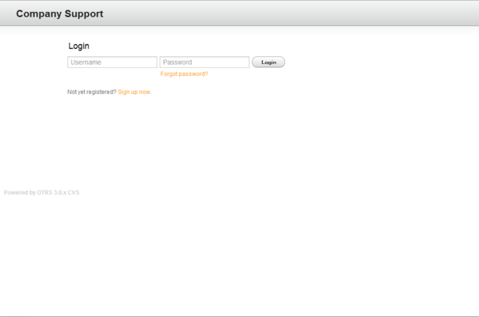

Customers have a separate web interface in OTRS through which they can create new accounts, change their account settings, create and edit tickets, get an overview on tickets that they have created, etc.
Continuing the above example, the customer login screen can be reached by using the URL http://www.example.com/otrs/customer.pl with a web browser (see Figure below).

Figure: Login screen of the customer interface.